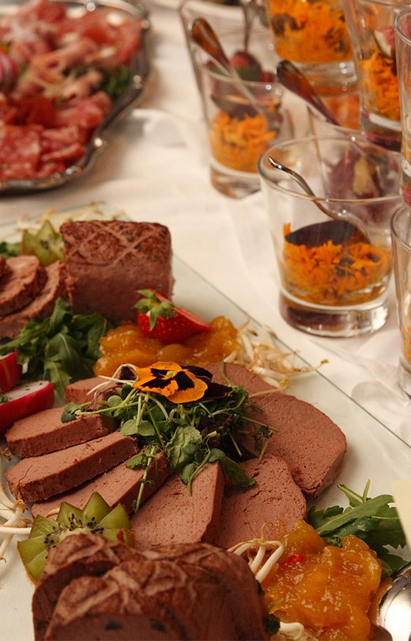
| 営業時間 | 火〜土 11:00〜23:00／日 11:00〜22:00 |
|---|---|
| 定休日 | 月曜(12月28日など特別営業日あり)・12月24日 |
| 住所 | Taschenberg 3, 01067 Dresden |
| 予約 | 推奨(公式サイトの予約フォーム。当日分は電話のみ) — ☎ +49 351 497260 ／ 公式サイト |
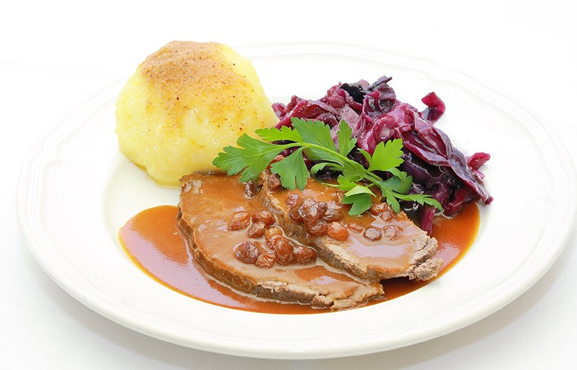
| 営業時間 | 月・火・木 12:00〜23:00／金・土 11:00〜24:00／日 11:00〜23:00 |
|---|---|
| 定休日 | 水曜(待降節の水曜は特別営業) |
| 住所 | An der Frauenkirche 12, 01067 Dresden |
| 予約 | 推奨(公式サイトの予約フォーム。当日分は電話のみ) — ☎ +49 351 262600 ／ 公式サイト |
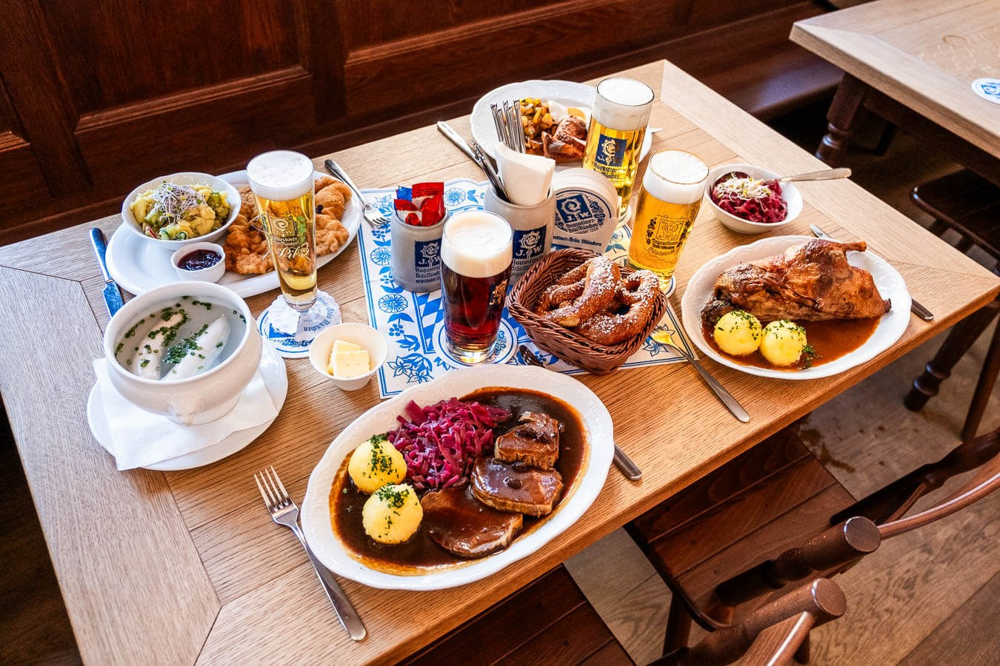
| 営業時間 | 毎日 11:00〜24:00(料理は22:30まで・飲み物は23:30まで) |
|---|---|
| 定休日 | 無休 |
| 住所 | An der Frauenkirche 13, 01067 Dresden |
| 予約 | 可(公式サイトの予約フォーム) — ☎ +49 351 49776650 ／ 公式サイト |
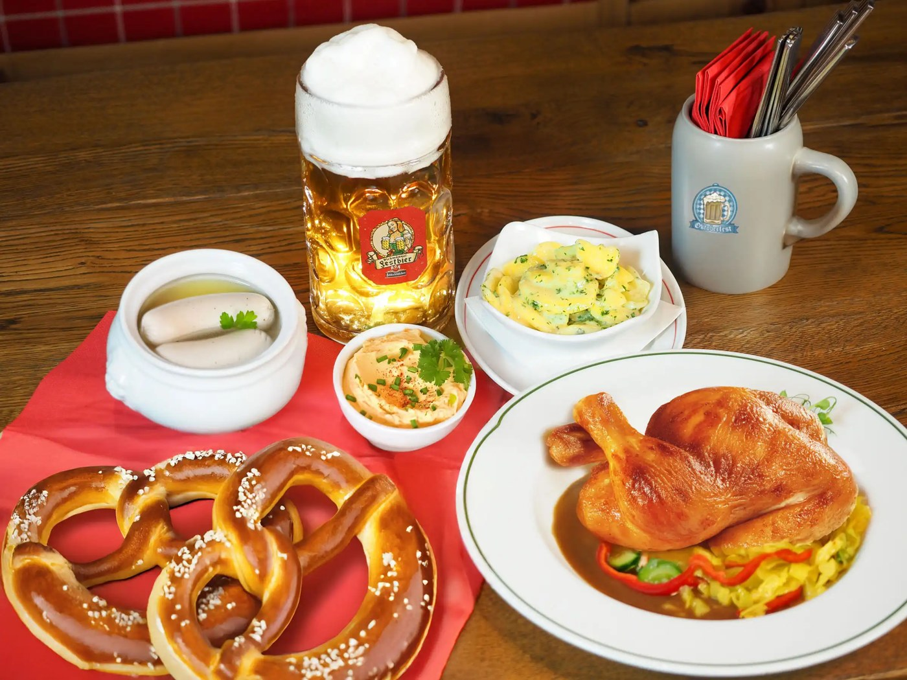
| 営業時間 | 毎日 10:00〜24:00 |
|---|---|
| 定休日 | 無休 |
| 住所 | Münzgasse 10, 01067 Dresden |
| 予約 | 可(公式サイトの予約ページ・電話) — ☎ +49 351 4965123 ／ 公式サイト |
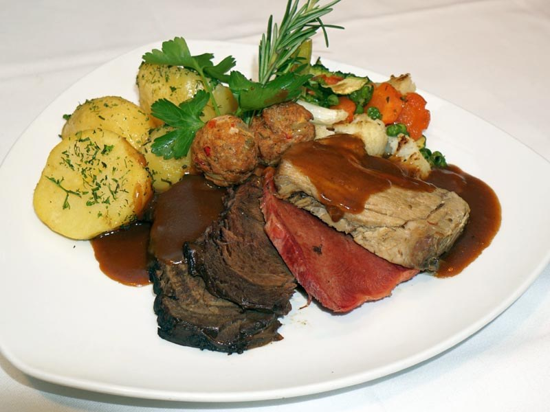
| 営業時間 | 毎日 9:00から(閉店時刻は公式サイトに記載なし) |
|---|---|
| 定休日 | 無休 |
| 住所 | An der Frauenkirche 20, 01067 Dresden |
| 予約 | 可(公式サイトの予約フォーム・電話) — ☎ +49 351 48205858 ／ 公式サイト |
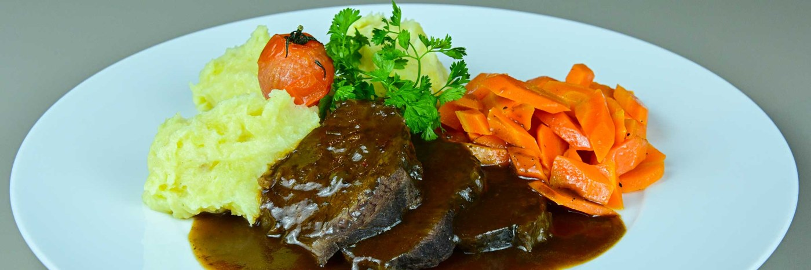
| 営業時間 | 月〜金 11:00〜22:00／土 11:00〜23:00／日 9:00〜22:00 |
|---|---|
| 定休日 | 無休 |
| 住所 | Bergbahnstraße 8, 01324 Dresden |
| 予約 | 推奨(公式サイトの予約ページ・電話。テラスの窓側は早めに) — ☎ +49 351 28777830 ／ 公式サイト |
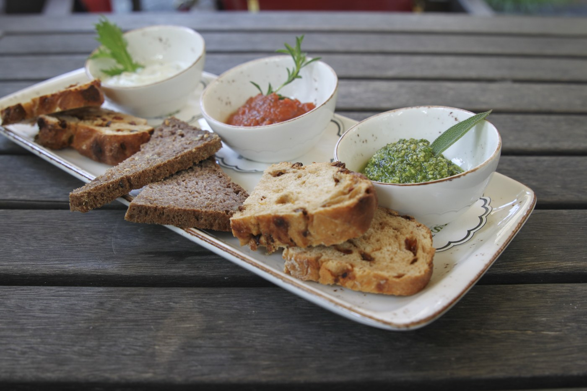
| 営業時間 | 火〜日 11:30から(閉店時刻は公式サイトに記載なし) |
|---|---|
| 定休日 | 月曜(祝日は営業) |
| 住所 | Fischhausstraße 14, 01099 Dresden |
| 予約 | 推奨(金曜18時〜日曜はその週の予約を電話のみで受付) — ☎ +49 351 899100 ／ 公式サイト |
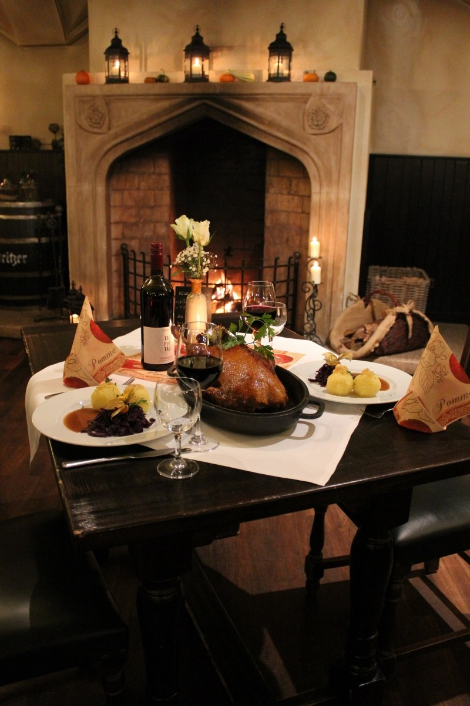
| 営業時間 | 火 16:00〜22:00／水〜土 11:30〜22:00／日 11:30〜21:00(料理は閉店の約45分前まで) |
|---|---|
| 定休日 | 月曜(聖霊降臨祭の月曜などは営業の場合あり) |
| 住所 | Altleubnitz 12, 01219 Dresden |
| 予約 | 可(電話・WhatsApp・公式サイト) — ☎ +49 351 32016500 ／ 公式サイト |
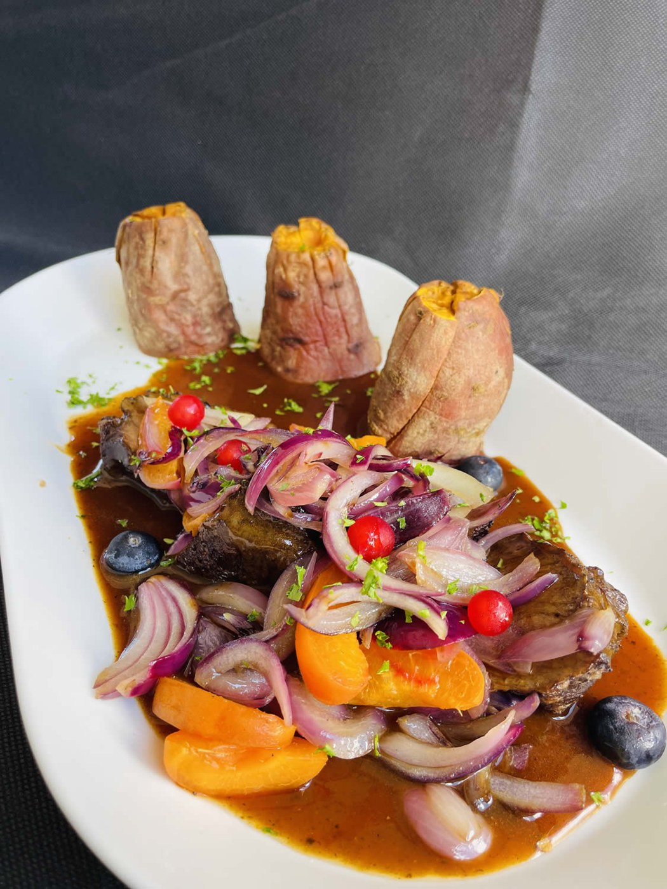
| 営業時間 | 水〜金 17:00〜22:00／土・日 12:00〜22:00 |
|---|---|
| 定休日 | 月曜・火曜 |
| 住所 | Alttrachau 41, 01139 Dresden |
| 予約 | 可(電話) — ☎ +49 351 8599577 ／ 公式サイト |
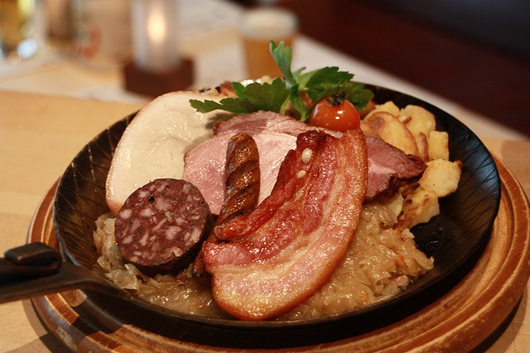
| 営業時間 | 月〜木 12:00〜23:00／金・土 12:00〜23:30／日 12:00〜21:00(料理は閉店1時間前まで) |
|---|---|
| 定休日 | 無休 |
| 住所 | Neumarkt 8, 01067 Dresden |
| 予約 | 推奨(公式サイトから OpenTable で予約。催しのある日は混む) — ☎ +49 351 5004347 ／ 公式サイト |
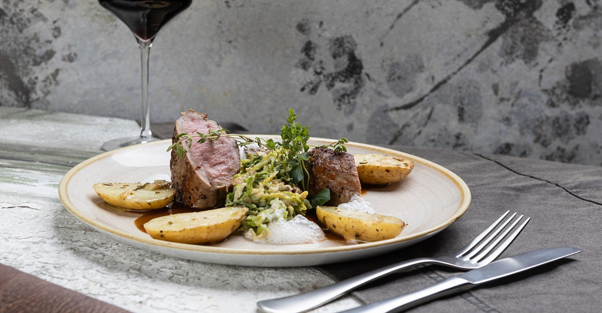
| 営業時間 | 毎日 12:00〜22:00 |
|---|---|
| 定休日 | 無休 |
| 住所 | Schloßstraße 10, 01067 Dresden |
| 予約 | 可(公式サイトの予約ページ・電話) — ☎ +49 351 21293939 ／ 公式サイト |
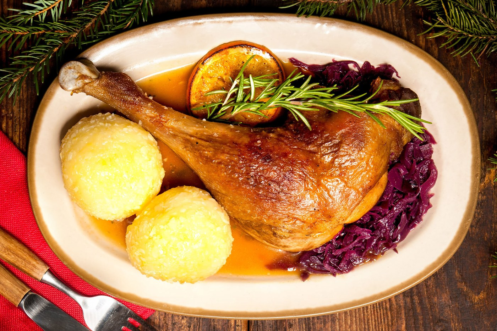
| 営業時間 | 月〜木 11:00〜22:00／金・土 11:00〜23:00／日 10:00〜22:00 |
|---|---|
| 定休日 | 無休 |
| 住所 | Querallee 7, 01219 Dresden |
| 予約 | 可(公式サイトの予約ページ・電話) — ☎ +49 351 2506000 ／ 公式サイト |
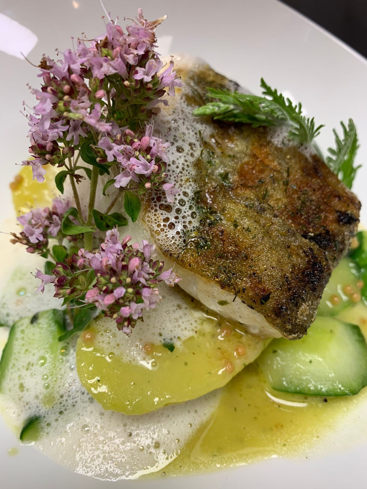
| 営業時間 | 月〜木 12:00〜23:00／金 12:00〜24:00／土 11:00〜24:00／日 11:00〜21:00(料理は月〜木21:00・金土21:30・日20:30まで) |
|---|---|
| 定休日 | 無休 |
| 住所 | Friedrich-Wieck-Straße 18, 01326 Dresden |
| 予約 | 推奨(電話・メール・公式サイトの予約フォーム。48時間前までに) — ☎ +49 351 2106443 ／ 公式サイト |
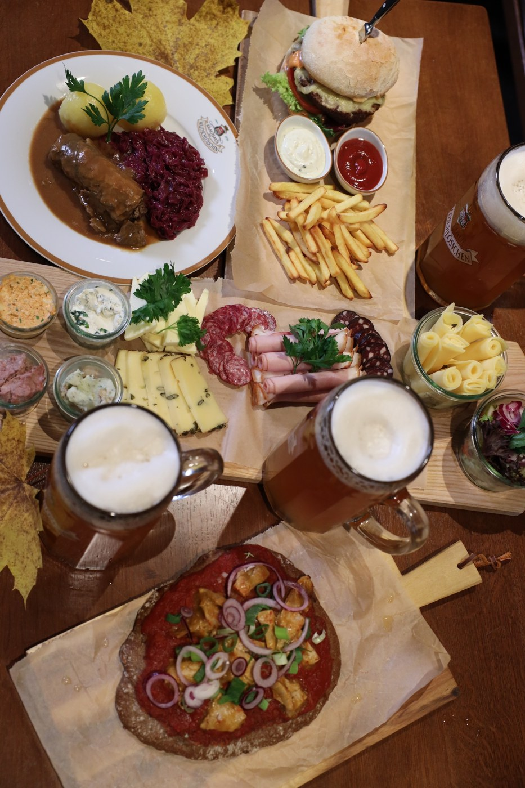
| 営業時間 | 日〜木 11:30〜22:00／金・土 11:30〜23:00（ビアガーデンは季節営業。2026年は9月末に閉場、12月13日の待降節イベントで再開予定） |
|---|---|
| 定休日 | なし（無休） |
| 住所 | Am Brauhaus 8b, 01099 Dresden |
| 予約 | 推奨（公式サイトのオンライン予約。ビアガーデンは予約不可） — ☎ +49 351 8042010 ／ 公式サイト |
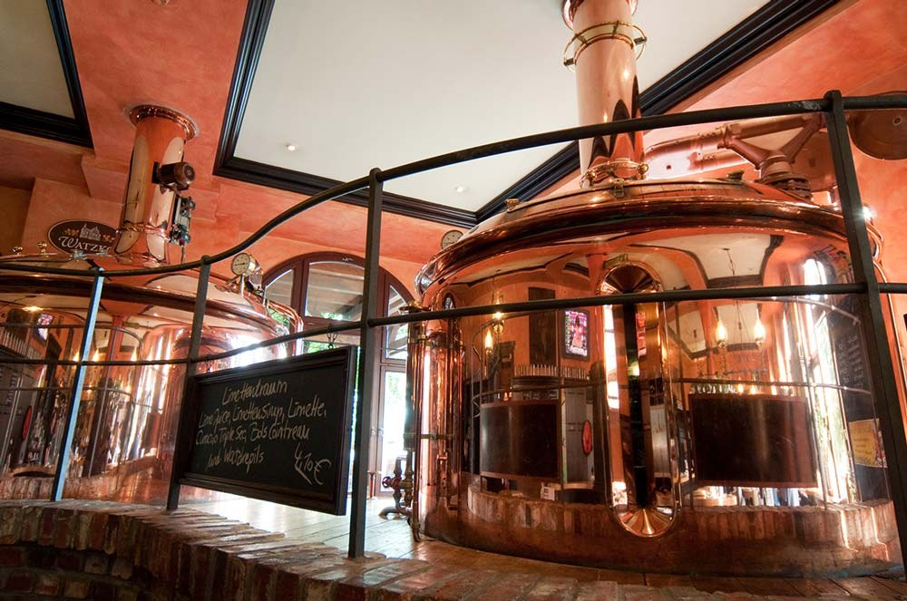
| 営業時間 | 日〜木 11:00〜23:00／金・土 11:00〜24:00（12月24日は10:00〜14:00） |
|---|---|
| 定休日 | なし（無休） |
| 住所 | Kötzschenbroder Straße 1, 01139 Dresden |
| 予約 | 推奨（公式サイトの予約フォーム・電話） — ☎ +49 351 852920 ／ 公式サイト |
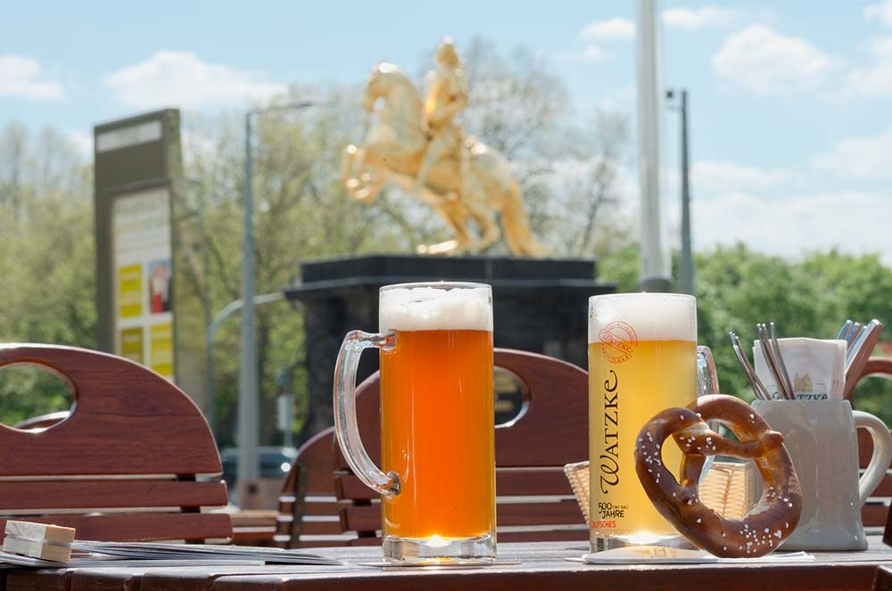
| 営業時間 | 日〜木 11:00〜23:00／金・土 11:00〜24:00（12月24日は11:00〜22:00） |
|---|---|
| 定休日 | なし（無休） |
| 住所 | Hauptstraße 1, 01097 Dresden |
| 予約 | 可（公式サイトの予約フォーム・電話） — ☎ +49 351 8106820 ／ 公式サイト |
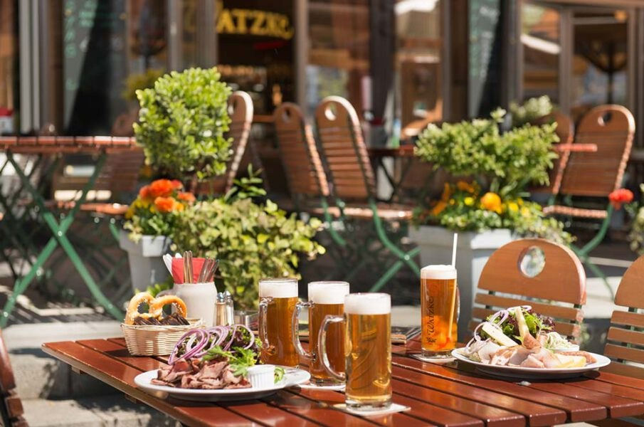
| 営業時間 | 日〜木 11:00〜23:00／金・土 11:00〜24:00 |
|---|---|
| 定休日 | なし（無休） |
| 住所 | Dr.-Külz-Ring 9, 01067 Dresden |
| 予約 | 可（公式サイトの予約フォーム・電話） — ☎ +49 351 20524381 ／ 公式サイト |
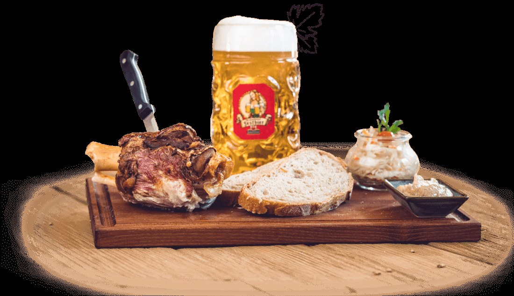
| 営業時間 | 月〜土 12:00〜23:00／日 10:00〜15:00（日曜は10:00〜14:00にブランチビュッフェ） |
|---|---|
| 定休日 | なし（日曜は15時閉店） |
| 住所 | Budapester Straße 32, 01069 Dresden |
| 予約 | 推奨（日曜ブランチは要予約。公式サイト・電話） — ☎ +49 351 4718855 ／ 公式サイト |
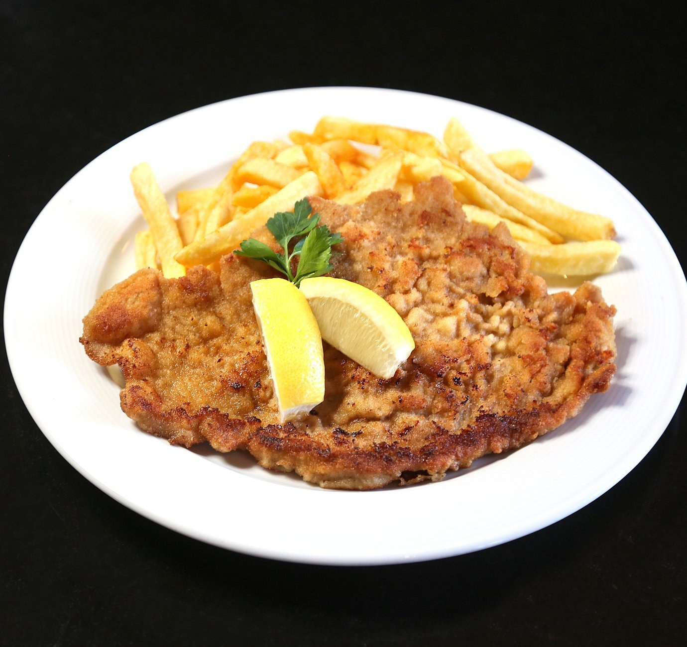
| 営業時間 | 毎日 11:00〜24:00（2026年6月の公式告知による。ビアガーデンは天候・季節により変動） |
|---|---|
| 定休日 | なし（無休） |
| 住所 | Schillerplatz 9, 01309 Dresden |
| 予約 | 可（公式サイトの予約ページ・電話。ビアガーデンは来店順） — ☎ +49 351 8119922 ／ 公式サイト |
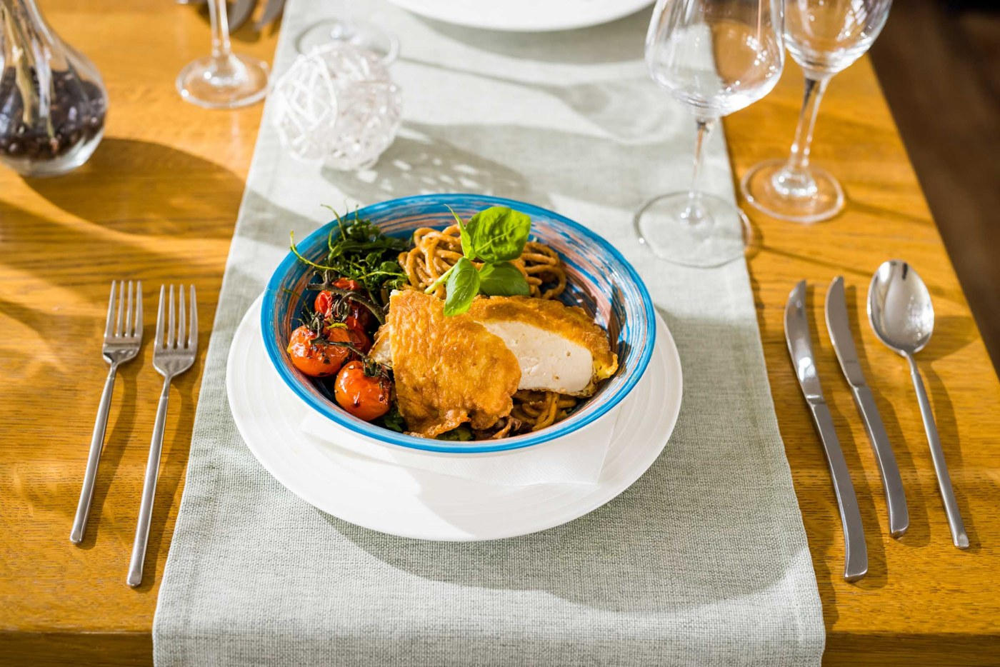
| 営業時間 | 月〜木 11:00〜22:00／金・土 11:00〜23:00／日 11:00〜22:00（料理は月〜木11:30〜20:30、金土11:00〜21:00、日11:00〜20:30） |
|---|---|
| 定休日 | なし（無休。混雑状況で時間変更の場合あり） |
| 住所 | Friedrich-Wieck-Straße 26, 01326 Dresden |
| 予約 | 可（公式サイトの予約ページ・電話・WhatsApp） — ☎ +49 351 2683620 ／ 公式サイト |
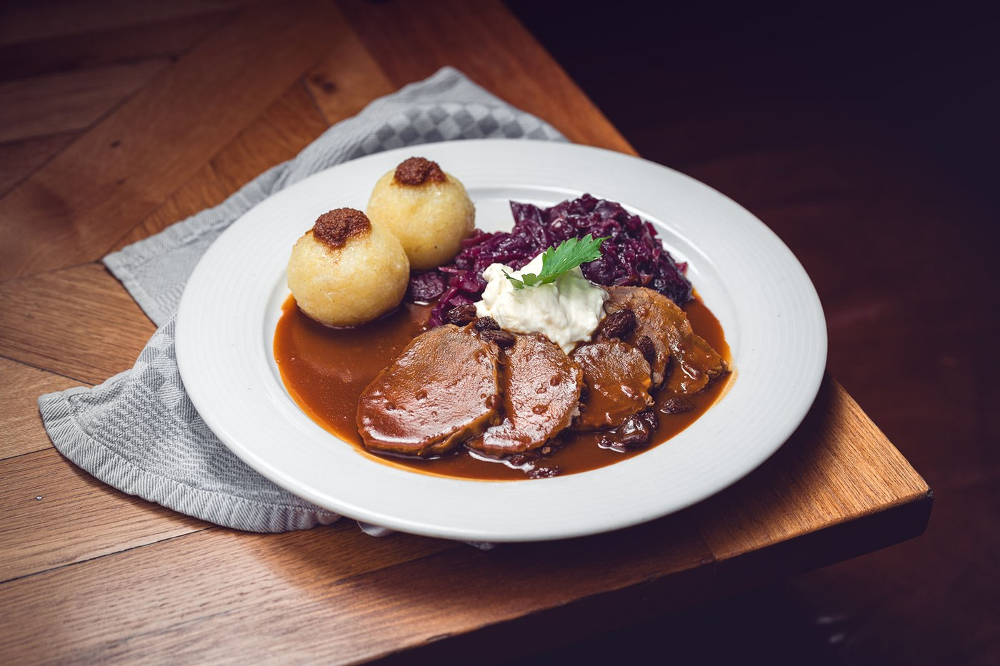
| 営業時間 | 毎日 12:00〜（閉店時刻は公式サイトに記載なし） |
|---|---|
| 定休日 | なし（無休） |
| 住所 | Terrassenufer 1, 01067 Dresden |
| 予約 | 可（公式サイトのテーブル予約） — ☎ +49 351 4848660 ／ 公式サイト |
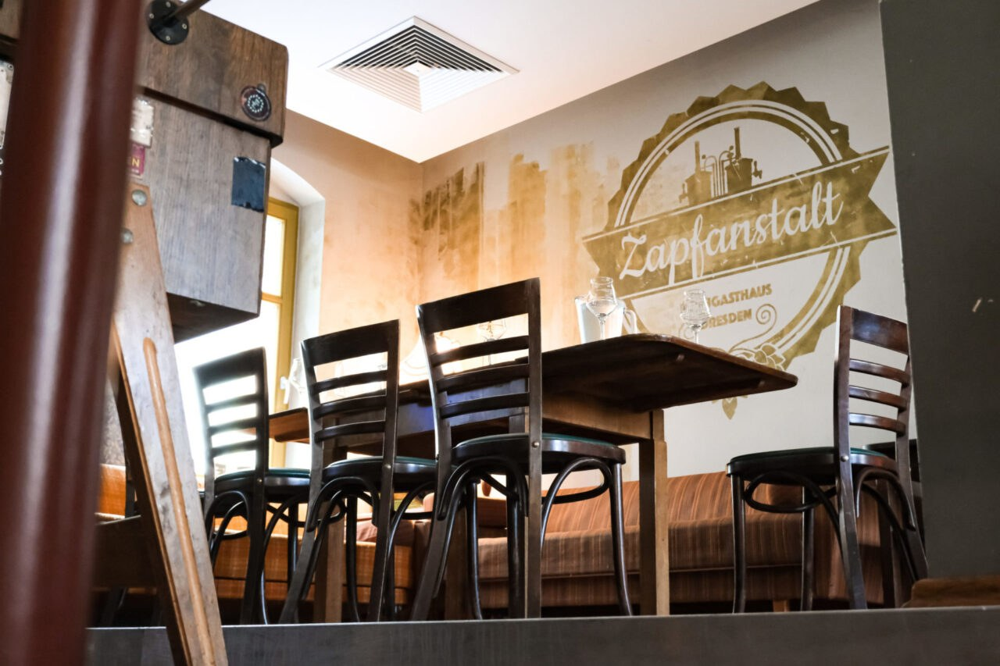
| 営業時間 | 月〜土 18:00〜（閉店時刻は公式サイトに記載なし） |
|---|---|
| 定休日 | 日曜 |
| 住所 | Sebnitzer Straße 15, 01099 Dresden |
| 予約 | 可（公式サイトのフォーム。11人以上は直接連絡） — ☎ +49 351 21996354 ／ 公式サイト |
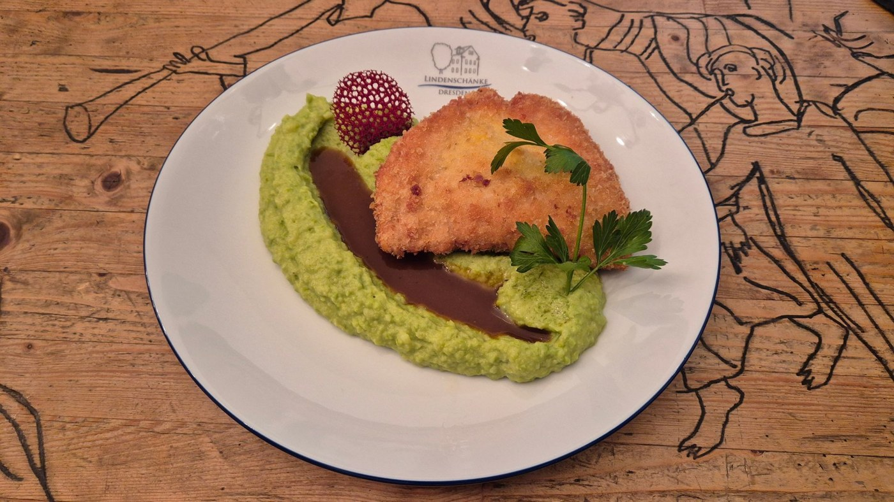
| 営業時間 | 火〜木 11:30〜22:00／金・土 11:30〜23:00／日 11:30〜22:00（料理は21時まで）。ビアガーデン(晴天時)：月〜金16時〜、土14時〜、日・祝12時〜 |
|---|---|
| 定休日 | 月曜（レストラン） |
| 住所 | Altmickten 1, 01139 Dresden |
| 予約 | 可（公式サイトのオンライン予約・電話） — ☎ +49 351 46689278 ／ 公式サイト |
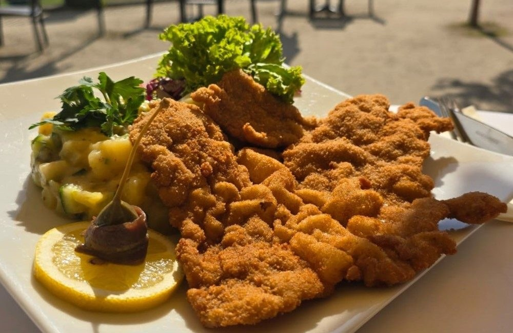
| 営業時間 | レストラン：水〜日 11:00〜22:00（料理は12時から、閉店60分前まで。第1・第3日曜は10:00〜14:00ブランチ）／ビアガーデン：月〜金 12:00〜21:00、土・日 11:00〜21:00（天候で変更あり） |
|---|---|
| 定休日 | 月・火（レストラン）。貸切の結婚式の日は休業 |
| 住所 | Bautzner Straße 132, 01099 Dresden |
| 予約 | 推奨（公式サイトの予約ページ・電話） — ☎ +49 351 4568510 ／ 公式サイト |
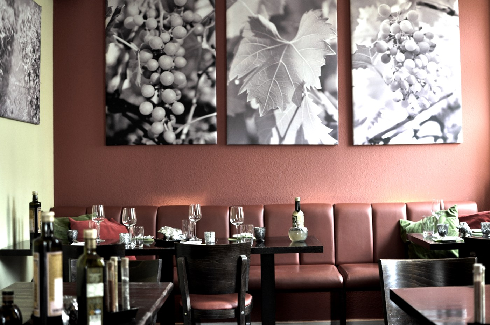
| 営業時間 | 火〜土 15:00〜22:00 |
|---|---|
| 定休日 | 日・月、一部の祝日 |
| 住所 | Wittenberger Straße 86, 01277 Dresden |
| 予約 | 推奨（メール info@weinkulturbar.de・電話） — ☎ +49 351 3157917 ／ 公式サイト |
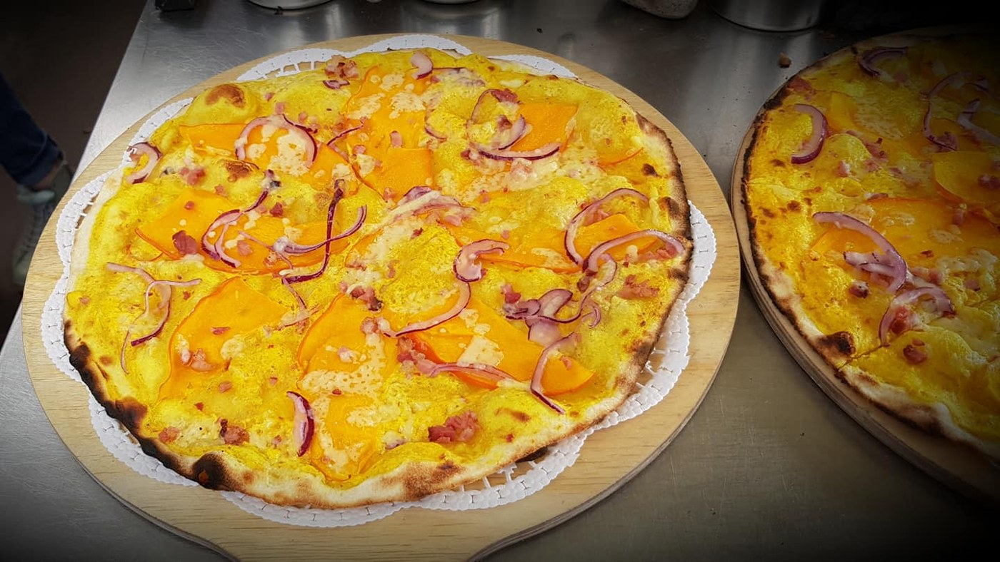
| 営業時間 | シュトラウスヴィルトシャフト：3月は日・祝、4〜10月は土・日・祝、11月は日・祝、いずれも11:00〜19:00（日没が早い時期は暗くなったら閉店）／ホーフラーデン(ワイン店)：水〜金13:00〜19:00、土・日・祝11:00〜19:00 |
|---|---|
| 定休日 | シュトラウスヴィルトシャフトは12〜2月と上記以外の曜日 |
| 住所 | Bautzner Straße 130, 01099 Dresden |
| 予約 | 不要（屋外の季節酒場。来店順） — ☎ +49 172 9930205 ／ 公式サイト |
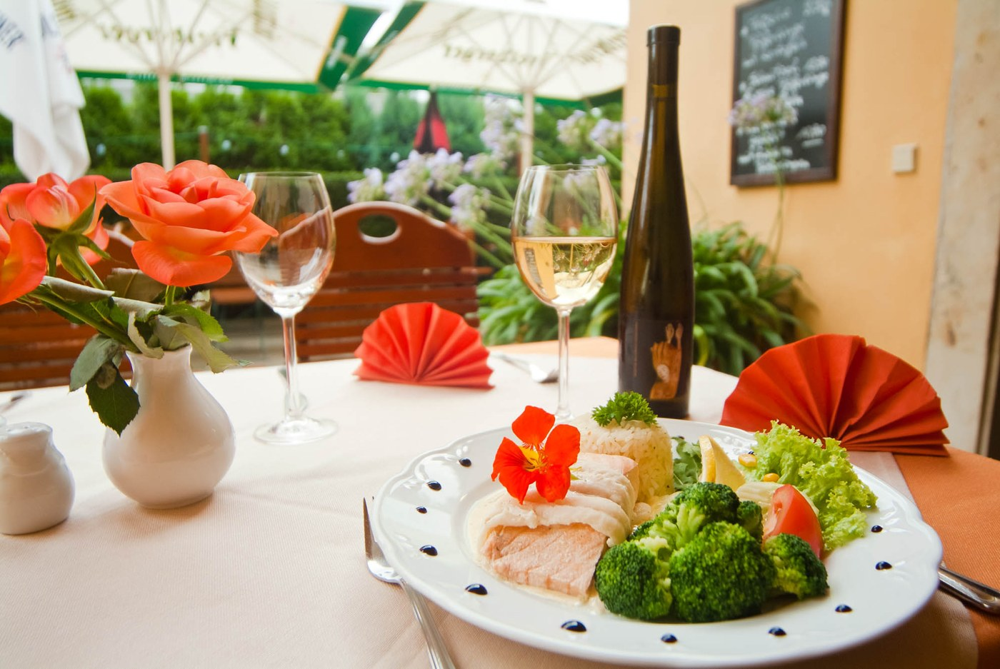
| 営業時間 | 火・水・金・土・日 11:30〜22:00（料理は20:30まで） |
|---|---|
| 定休日 | 月・木（祝日の場合は営業） |
| 住所 | Orangeriestraße 5, 01326 Dresden |
| 予約 | 可（公式サイトの予約フォーム・電話） — ☎ +49 351 2610188 ／ 公式サイト |
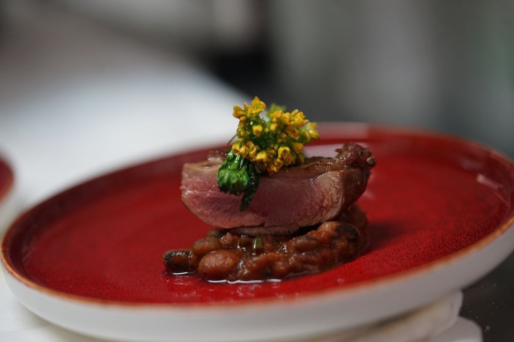
| 営業時間 | 水〜土 17:00〜 |
|---|---|
| 定休日 | 日・月・火 |
| 住所 | Bürgerstraße 14, 01127 Dresden |
| 予約 | 推奨（公式サイトの予約・電話） — ☎ +49 351 8211900 ／ 公式サイト |
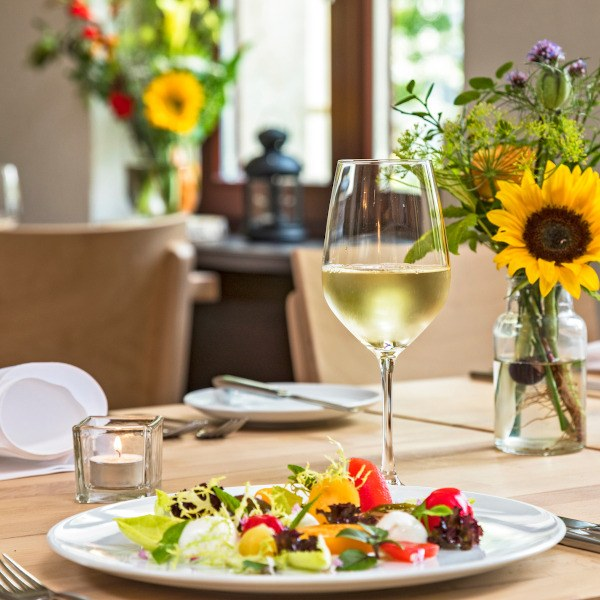
| 営業時間 | 火〜土 17:00〜 |
|---|---|
| 定休日 | 日・月 |
| 住所 | Gluckstraße 3, 01309 Dresden |
| 予約 | 推奨（公式サイトのオンライン予約・電話） — ☎ +49 351 81197575 ／ 公式サイト |
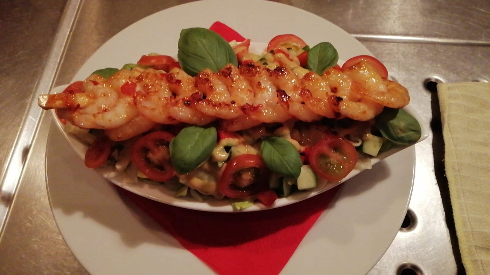
| 営業時間 | 火〜土 18:00〜24:00 |
|---|---|
| 定休日 | 日・月（15人以上の貸切のみ営業） |
| 住所 | Dornblüthstraße 7, 01277 Dresden |
| 予約 | 推奨（電話のみ。留守番電話に名前と電話番号を残すと折り返しあり） — ☎ +49 351 3125051 ／ 公式サイト |
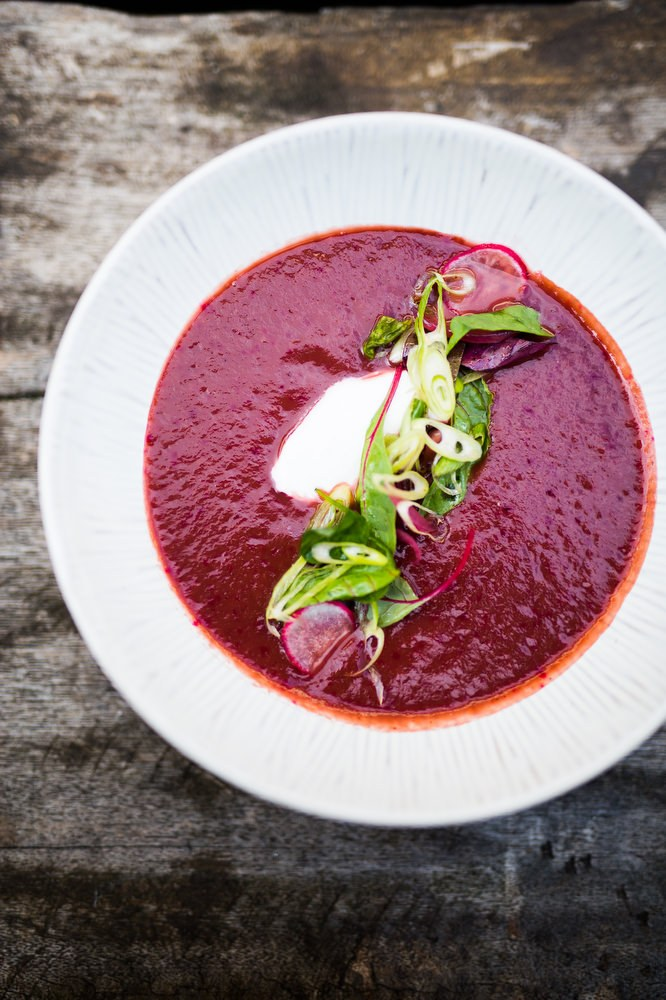
| 営業時間 | レストラン：水〜土 18:00〜22:00（DELIとラウンジは火〜土 12:00〜22:00） |
|---|---|
| 定休日 | 日・月・火（レストラン）。2026年10月14〜24日はレストラン休業、2026年10月31日はレストラン休業・DELIは17〜22時、2026年11月18日は休業（公式サイトの告知） |
| 住所 | Königsbrücker Straße 96, Haus 25-26, 01099 Dresden |
| 予約 | 要（公式サイトのオンライン予約。事務所の電話は火〜金11〜17時） — ☎ +49 351 2721696 ／ 公式サイト |
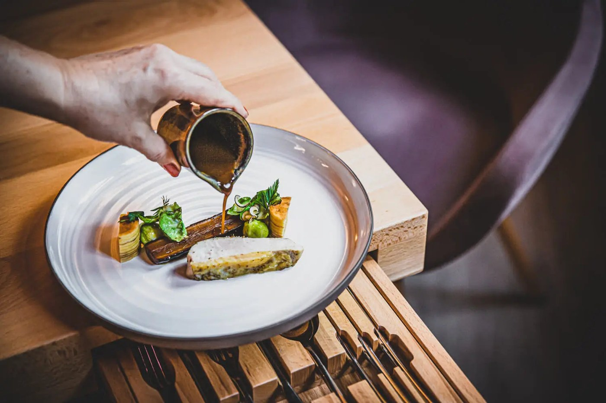
| 営業時間 | 火〜金 17:00〜23:00／土 12:00〜15:30、17:00〜23:00 |
|---|---|
| 定休日 | 日・月。2026年10月25〜28日・12月24〜28日は休業（12月20・21日は特別営業） |
| 住所 | Bautzner Straße 149, 01099 Dresden |
| 予約 | 要（公式サイトの予約フォームまたは電話） — ☎ +49 351 25028337 ／ 公式サイト |
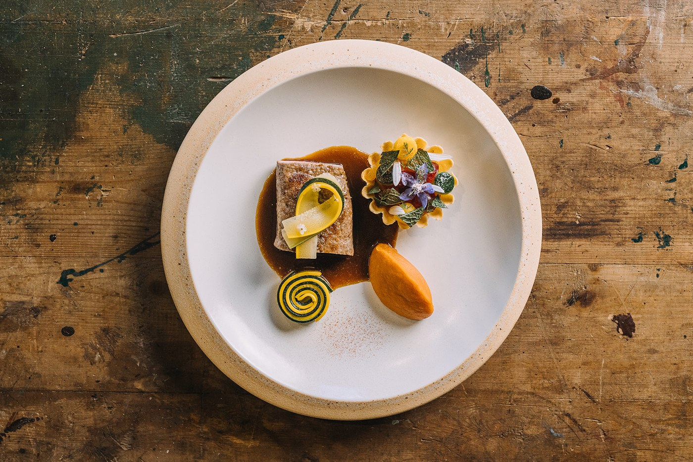
| 営業時間 | 水〜日 18:00〜22:30（アドヴェントの日曜は12:00〜14:30も営業） |
|---|---|
| 定休日 | 月・火。2026年10月19〜27日・12月23〜24日・12月28〜29日、2027年1月1日・1月11〜26日ほかは休業 |
| 住所 | Ullersdorfer Platz 4, 01324 Dresden |
| 予約 | 推奨（電話またはメール kontakt@heiderand.restaurant） — ☎ +49 351 2683166 ／ 公式サイト |
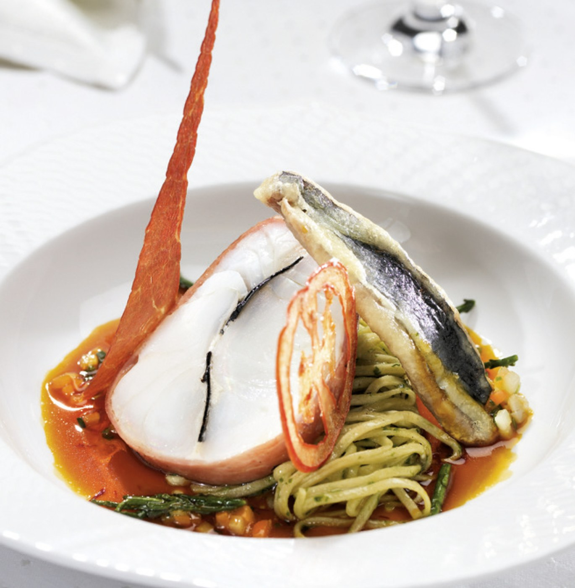
| 営業時間 | 火〜土 18:00〜22:00 |
|---|---|
| 定休日 | 日・月 |
| 住所 | Wallgäßchen 4, 01097 Dresden |
| 予約 | 要（公式サイトの予約ページまたは電話・メール feinekost@mariopattis.de） — ☎ +49 351 65863876 ／ 公式サイト |
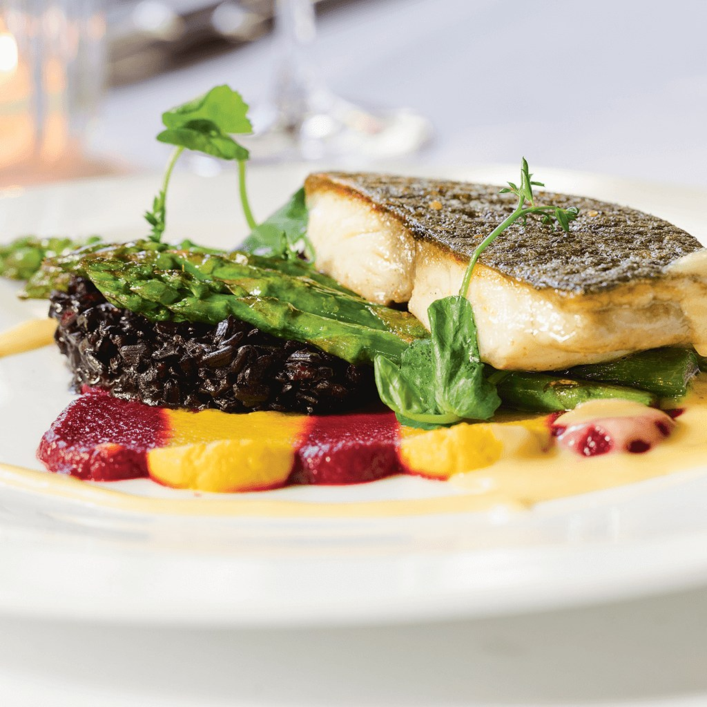
| 営業時間 | レストラン 火〜土 17:00〜23:00／ビストロ 火〜金 11:00〜14:00 |
|---|---|
| 定休日 | 日・月 |
| 住所 | Augsburger Straße 85, 01277 Dresden |
| 予約 | 推奨（電話・WhatsApp 0174 3202592・メール info@restaurant-stresa.de・公式サイトの予約） — ☎ +49 351 65615730 ／ 公式サイト |
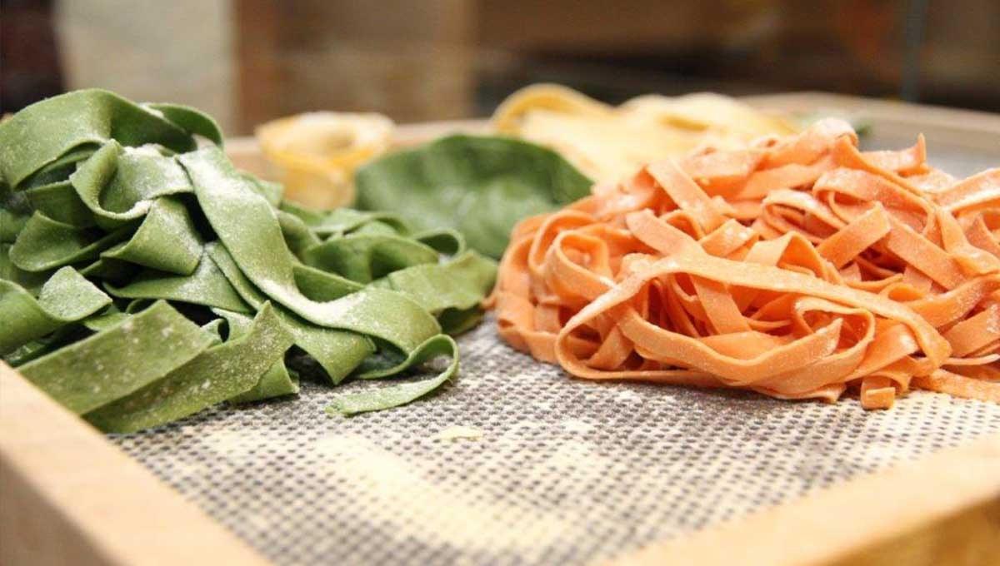
| 営業時間 | 月〜日 11:00〜23:00 |
|---|---|
| 定休日 | なし（年中無休の表記） |
| 住所 | Kreuzstraße 1-3, 01067 Dresden |
| 予約 | 推奨（公式サイトのテーブル予約フォーム・電話） — ☎ +49 351 4976600 ／ 公式サイト |
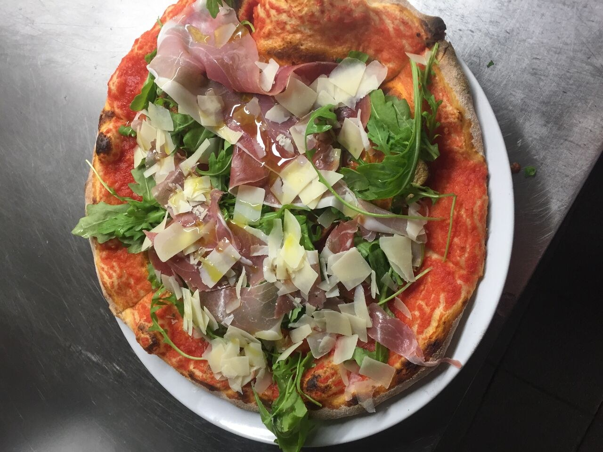
| 営業時間 | 月〜土 11:00〜14:00・17:00〜22:00／日 17:00〜22:00 |
|---|---|
| 定休日 | なし（日曜は昼の営業なし） |
| 住所 | Königstraße 6, 01097 Dresden |
| 予約 | 可（公式サイトのオンライン予約・電話） — ☎ +49 351 8025797 ／ 公式サイト |
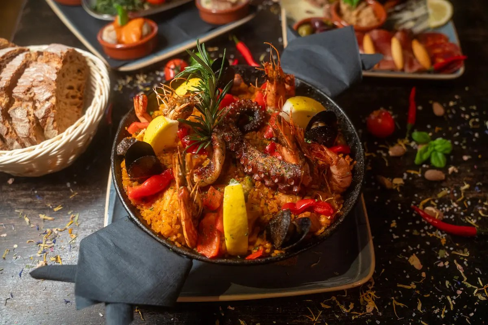
| 営業時間 | 日〜木 11:00〜22:00／金・土 11:00〜23:00（平日ランチ 11:00〜14:00） |
|---|---|
| 定休日 | なし |
| 住所 | Neumarkt 12, 01067 Dresden |
| 予約 | 推奨（公式サイトの予約ページ・電話。テラス席は特に） — ☎ +49 351 49773800 ／ 公式サイト |
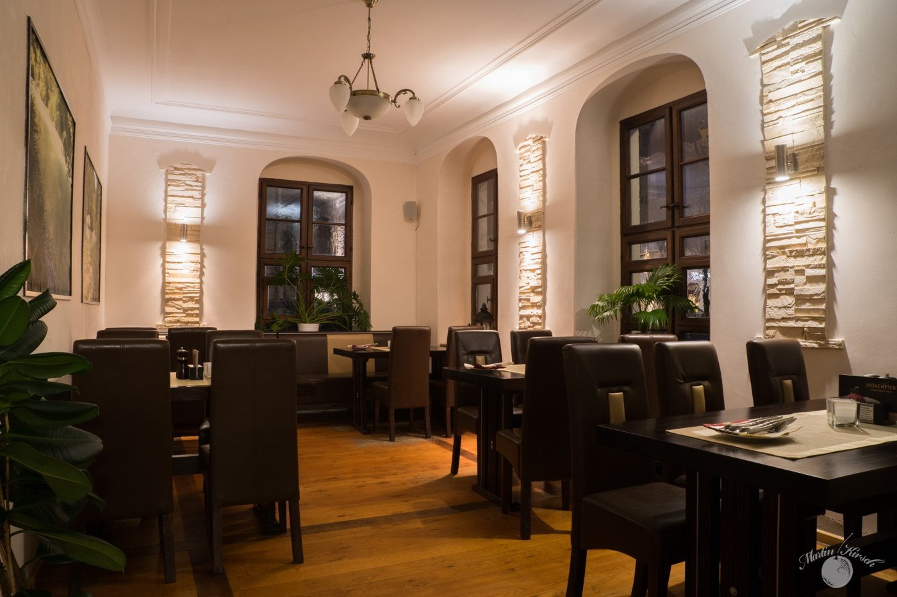
| 営業時間 | 火〜金 17:00〜23:00／土・日 11:30〜14:00・17:00〜23:00 |
|---|---|
| 定休日 | 月曜 |
| 住所 | Königstraße 5a, 01097 Dresden |
| 予約 | 可（電話・公式サイトの予約フォーム） — ☎ +49 351 30902071 ／ 公式サイト |
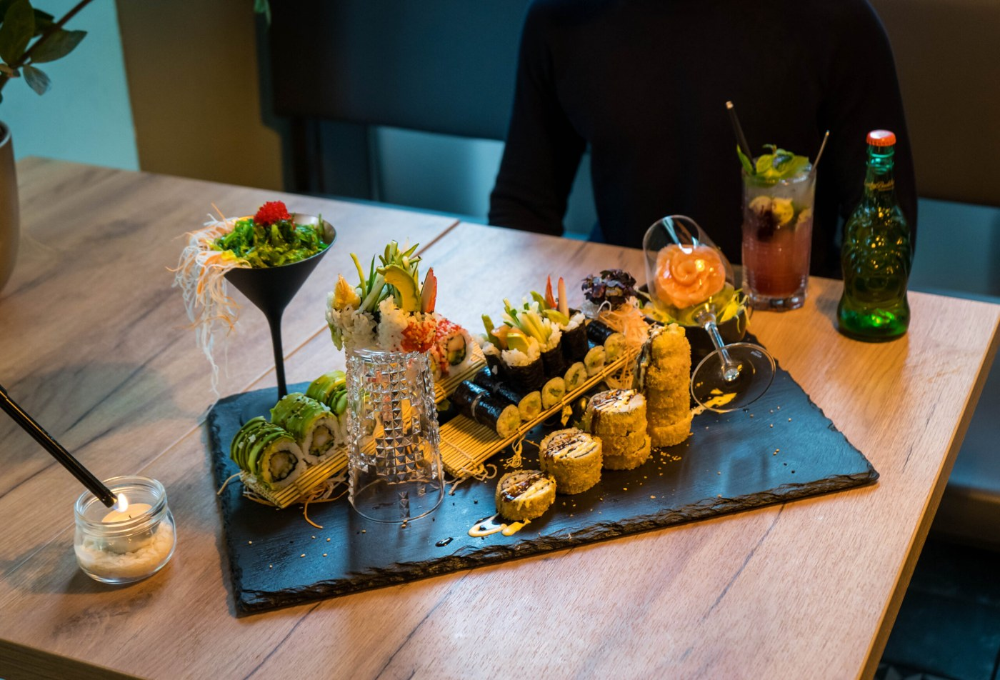
| 営業時間 | 日〜木 11:00〜23:00／金・土 11:00〜24:00 |
|---|---|
| 定休日 | なし |
| 住所 | Kleine Brüdergasse 5, 01067 Dresden |
| 予約 | 可（電話・公式サイトのオンライン予約。ホットポットは要予約） — ☎ +49 351 48104820 ／ 公式サイト |
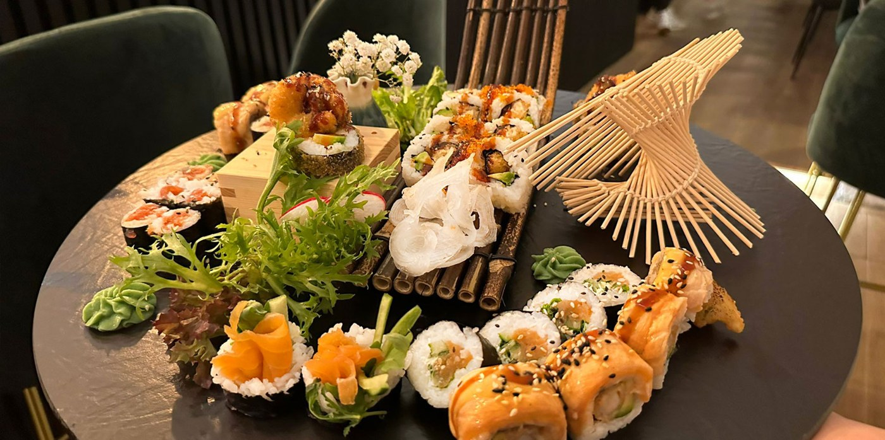
| 営業時間 | 火〜金 11:00〜15:00・17:00〜22:00／土・日・祝 11:00〜22:00 |
|---|---|
| 定休日 | 月曜 |
| 住所 | Nürnberger Straße 32, 01187 Dresden |
| 予約 | 可（電話・公式サイトの予約フォーム） — ☎ +49 351 26068144 ／ 公式サイト |
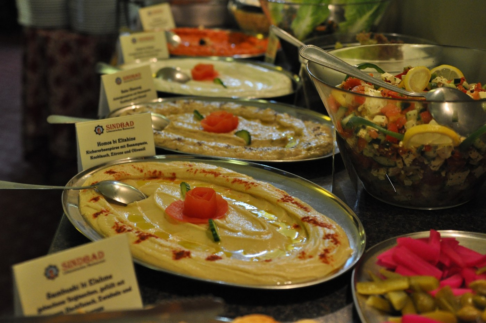
| 営業時間 | 火・水 17:00〜23:00／木〜日 11:30〜14:30・17:00〜24:00 |
|---|---|
| 定休日 | 月曜 |
| 住所 | Hübnerstraße 13, 01069 Dresden |
| 予約 | 推奨（電話） — ☎ +49 351 4762451 ／ 公式サイト |
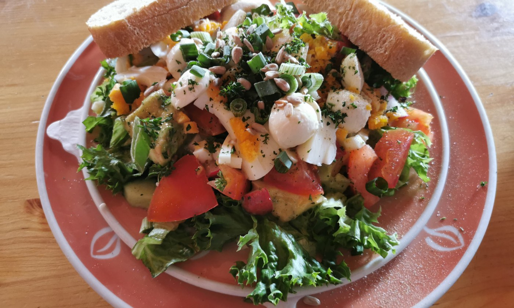
| 営業時間 | 月〜土 11:00〜23:00 |
|---|---|
| 定休日 | 日曜 |
| 住所 | Schützengasse 18, 01067 Dresden |
| 予約 | 推奨（公式サイトの予約フォームは24時間前まで、それ以降と11人以上は電話） — ☎ +49 351 21789068 ／ 公式サイト |
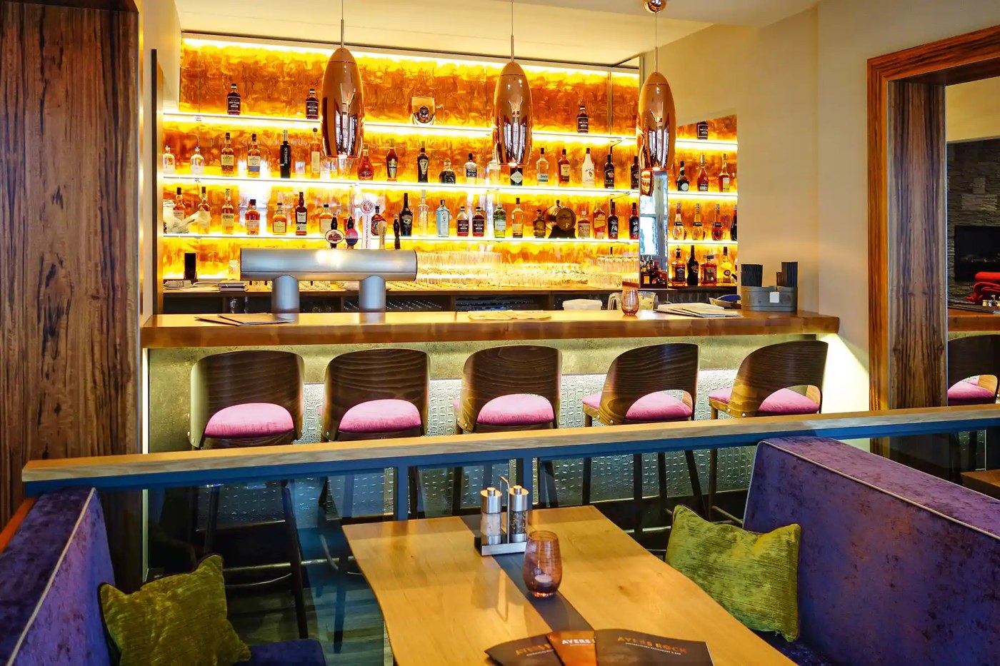
| 営業時間 | 毎日 11:00〜翌2:00 |
|---|---|
| 定休日 | なし |
| 住所 | Münzgasse 8, 01067 Dresden |
| 予約 | 可（公式サイトから OpenTable で予約・電話） — ☎ +49 351 4901188 ／ 公式サイト |
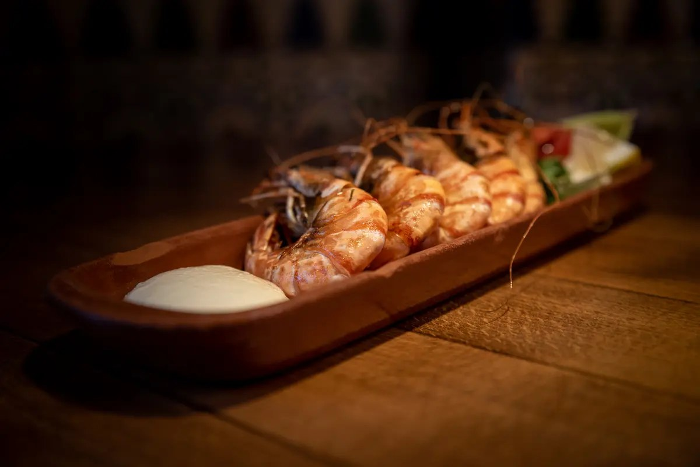
| 営業時間 | 月〜日 11:00〜23:00（平日ランチ 11:00〜14:00） |
|---|---|
| 定休日 | なし |
| 住所 | An der Dreikönigskirche 7, 01097 Dresden |
| 予約 | 推奨（公式サイトの予約ページ・電話） — ☎ +49 351 8048670 ／ 公式サイト |
| 営業時間 | 火〜土 18:00〜0:00 |
|---|---|
| 定休日 | 日曜・月曜 |
| 住所 | Jordanstraße 8, 01099 Dresden |
| 予約 | 推奨（公式サイトの予約ページか電話） — ☎ +49 351 30972877 ／ 公式サイト |
| 営業時間 | 月〜木 17:00〜、金・土 12:00〜（通しで温かい料理、ラストオーダー22:00） |
|---|---|
| 定休日 | 日曜（公式の営業時間に記載なし） |
| 住所 | Böhmische Straße 34, 01099 Dresden |
| 予約 | 推奨（席数が限られるため公式は予約を勧める。オンライン予約・電話・gastro@raskolnikoff.de。2時間で席の入れ替えあり） — ☎ +49 351 8045706 ／ 公式サイト |
| 営業時間 | 月〜金 16:00〜22:00、土・日 12:00〜22:00（土日の料理は12:00〜15:00と18:00〜22:00） |
|---|---|
| 定休日 | なし（公式に定休日の記載なし） |
| 住所 | Alaunstraße 70, 01099 Dresden |
| 予約 | 推奨（18〜22時は混むと地元紙。電話か reservierung@lilasosse.de） — ☎ +49 351 8036723 ／ 公式サイト |
| 営業時間 | 昼 火〜金 11:30〜14:00、夜 月〜土 17:30〜22:30 |
|---|---|
| 定休日 | 日曜（月曜・土曜は夜のみ） |
| 住所 | Alaunstraße 93, 01099 Dresden |
| 予約 | 推奨（電話） — ☎ +49 351 8014848 ／ 公式サイト |
| 営業時間 | 月〜木 11:30〜15:00・16:30〜22:00、金〜日・祝日 11:30〜22:00 |
|---|---|
| 定休日 | なし |
| 住所 | Alaunstraße 83, 01099 Dresden |
| 予約 | 可（公式サイトの予約ボタン） — ☎ +49 351 81042113 ／ 公式サイト |
| 営業時間 | 月〜金 11:30〜15:00 |
|---|---|
| 定休日 | 土曜・日曜 |
| 住所 | Rothenburger Straße 12, 01099 Dresden |
| 予約 | 不可（公式に「予約は一切受けない」） — ☎ +49 351 21093510 ／ 公式サイト |
| 営業時間 | 月 17:00〜22:00、水〜金 17:00〜22:00、土・日 13:00〜22:00 |
|---|---|
| 定休日 | 火曜 |
| 住所 | Rudolf-Leonhard-Straße 3, 01097 Dresden |
| 予約 | 推奨（席が少ないため。公式サイトの予約フォームか電話） — ☎ +49 351 30959112 ／ 公式サイト |
| 営業時間 | 月〜土 17:00〜22:00 |
|---|---|
| 定休日 | 日曜 |
| 住所 | Bürgerstraße 36, 01127 Dresden |
| 予約 | 推奨（公式サイトの予約フォームか電話） — ☎ +49 351 31469650 ／ 公式サイト |
| 営業時間 | 月〜日 11:30〜15:00・17:00〜22:00 |
|---|---|
| 定休日 | なし |
| 住所 | Bürgerstraße 45, 01127 Dresden |
| 予約 | 可（電話での予約・持ち帰りの予約注文に対応と地元紙。番号は未確認） |
| 営業時間 | 月〜土 8:00〜20:00（店ごとに異なる） |
|---|---|
| 定休日 | 日曜 |
| 住所 | Metzer Straße 1, 01097 Dresden |
| 予約 | 不要 — 公式サイト |
| 営業時間 | 金 8:00〜16:30 |
|---|---|
| 定休日 | 金曜以外（2026年12月25日分は12月23日（水）、2027年1月1日分は12月30日（水）に振替） |
| 住所 | Lingnerallee, 01069 Dresden |
| 予約 | 不要 — 公式サイト |
| 営業時間 | 木 9:00〜17:00／土 8:00〜13:00 |
|---|---|
| 定休日 | 木・土以外 |
| 住所 | Alaunplatz, 01099 Dresden |
| 予約 | 不要 — 公式サイト |
| 営業時間 | 月〜木・日 11:30〜21:00／金・土 11:30〜22:00 |
|---|---|
| 定休日 | なし（無休） |
| 住所 | Louisenstraße 62, 01099 Dresden |
| 予約 | 不要 — ☎ +49 351 2093154 ／ 公式サイト |
| 営業時間 | 月〜木・日 11:00〜18:00／金・土 11:00〜20:00 |
|---|---|
| 定休日 | 1月1日 |
| 住所 | Schloßstraße 1, 01067 Dresden |
| 予約 | 不要 — ☎ +49 351 40768888 ／ 公式サイト |
| 営業時間 | 月〜土 10:00〜18:00（ミルヒトリンクハレも同じ） |
|---|---|
| 定休日 | 日曜・祝日 |
| 住所 | Bautzner Straße 79, 01099 Dresden |
| 予約 | 不要（個人は来店順。30人までの団体のチーズ試食のみ公式フォームで要予約） — 公式サイト |
| 営業時間 | 月〜土 10:00〜18:00 |
|---|---|
| 定休日 | 日曜・祝日 |
| 住所 | Altmarkt 25（Altmarkt-Galerie内）, 01067 Dresden |
| 予約 | 不要（予約受付の記載なし。問い合わせはdresden@kreutzkamm.de） — ☎ +49 351 4954172 ／ 公式サイト |
| 営業時間 | 月 9:00〜18:00／火〜木 9:00〜22:00／金・土 9:00〜23:00／日 9:00〜18:00 |
|---|---|
| 定休日 | 無休（12月25日は休業。12月24日は14時まで、12月31日は17時まで） |
| 住所 | Schillerplatz 7, 01309 Dresden |
| 予約 | 推奨（公式サイトのオンライン予約または電話） — ☎ +49 351 3100744 ／ 公式サイト |
| 営業時間 | 毎日 8:00〜18:00 |
|---|---|
| 定休日 | 無休 |
| 住所 | Schloßstraße 16, 01067 Dresden |
| 予約 | 不要（予約受付の記載なし） — ☎ +49 351 48184717 ／ 公式サイト |
| 営業時間 | 日〜木 11:00〜23:00／金・土 11:00〜24:00（料理は通し営業） |
|---|---|
| 定休日 | 無休（日曜・祝日も営業） |
| 住所 | An der Frauenkirche 12, 01067 Dresden |
| 予約 | 推奨（公式サイトの予約フォームまたはOpenTable、電話） — ☎ +49 351 4962444 ／ 公式サイト |
| 営業時間 | 月〜金 8:59〜14:59（朝食は8:59と9:59の2回のみ、要事前連絡） |
|---|---|
| 定休日 | 土曜・日曜・祝日 |
| 住所 | Salzgasse 8, 01067 Dresden |
| 予約 | 朝食のみ要（電話）。ケーキとコーヒーは不要 — ☎ +49 151 54846625 ／ 公式サイト |
| 営業時間 | 月〜土 6:00〜18:00／日 7:00〜18:00 |
|---|---|
| 定休日 | 12月25・26日、1月1日（12月24日・31日は13時まで） |
| 住所 | Söbrigener Straße 1, 01326 Dresden |
| 予約 | 可（予約専用電話） — 公式サイト |
| 営業時間 | 月〜金 6:30〜18:00／土 6:30〜17:00／日・祝 7:30〜17:00 |
|---|---|
| 定休日 | 12月25・26日、1月1日（12月24日・31日は12時まで） |
| 住所 | Augsburger Straße 4, 01309 Dresden |
| 予約 | 不要（予約受付の記載なし） — ☎ +49 351 43508723 ／ 公式サイト |
| 営業時間 | 月〜金 10:00〜18:00（焙煎は月〜水） |
|---|---|
| 定休日 | 土曜・日曜・祝日 |
| 住所 | Jagdweg 1-3（入口 Rosenstraße 92）, 01159 Dresden |
| 予約 | 不要（焙煎所見学とバリスタ講座は公式サイトで要予約） — ☎ +49 351 48618818 ／ 公式サイト |
| 営業時間 | 火〜土 10:00〜18:00 |
|---|---|
| 定休日 | 日曜・月曜 |
| 住所 | Dürerstraße 119, 01309 Dresden |
| 予約 | 不要（焙煎見学は要予約） — ☎ +49 351 31263626 ／ 公式サイト |
| 営業時間 | 月〜土 10:30〜18:00／祝日 12:00〜18:00 |
|---|---|
| 定休日 | 日曜（公式に日曜の記載なし）・1月は冬季休業 |
| 住所 | Dr.-Külz-Ring 14, 01067 Dresden |
| 予約 | 不可（立ち食い・持ち帰りのみ） — ☎ +49 172 7979429 ／ 公式サイト |
| 営業時間 | 店（シュロス通り22）：月〜土 10:00〜19:00、日・祝 10:00〜18:30／喫茶（シュロス通り24）：月・水〜日 11:00〜18:00 |
|---|---|
| 定休日 | 喫茶は火曜休（店は無休） |
| 住所 | Schloßstraße 22, 01067 Dresden（喫茶は Schloßstraße 24） |
| 予約 | 喫茶は可（公式サイトのテーブル予約） — ☎ +49 351 32029191 ／ 公式サイト |
本ガイドは個人利用目的で作成。掲載情報は2026年10月時点の調査に基づく。写真出典: 各店の公式サイト・公式SNS、および観光局・地域情報サイト等の掲載写真（著作権は各サイト・各撮影者に帰属）。引用元は店ごとにカード内へ明記。